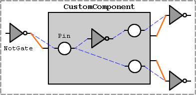

java.util.Observable
model.LogicComponent
model.CustomComponent
java.util.Observable
model.LogicComponent
model.CustomComponent
|
|||||||||||
| PREV CLASS NEXT CLASS | FRAMES NO FRAMES | ||||||||||
| SUMMARY: NESTED | FIELD | CONSTR | METHOD | DETAIL: FIELD | CONSTR | METHOD | ||||||||||
java.lang.Object
CustomComponent extends the abstract class
LogicComponent and provides customizable functionality. The
CustomComponent class is basically a container component with
no logic functionality of its own. Each CustomComponent contains
a collection of components (including other CustomComponents)
that perform the logic displayed by their parent
CustomComponent.
When an external component passes its output values to a
CustomComponent, the values are transferred via special input
Pin components to inputs of components inside the
CustomComponent's collection. When the last components inside
the container update their outputs, the values are again transferred by
output Pin components to the inputs of other components outside
the CustomComponent.
Visually, external components are connected directly to the inputs and
outputs of the CustomComponent object, but logically external
source components are connected to internal input Pin components
and internal output Pin components are connected to the external
sink components.
Below is a diagram of a simple custom component. The blue dashed lines are logical connections and the solid orange lines are visual connections made with wires.

| Nested Class Summary |
| Nested classes inherited from class model.LogicComponent |
LogicComponent.ConnectionPoint |
| Field Summary | |
static java.lang.String |
TYPE_STRING
used to identify CustomComponent objects |
| Fields inherited from class model.LogicComponent |
componentImage, FALSE, id, INPUT, inputs, LOGIC, model, newOutputValues, OUTPUT, outputs, outputValues, TRUE, UNDEFINED |
| Constructor Summary | |
CustomComponent(Model model,
java.lang.String filePath)
Constructs a solitary new CustomComponent object. |
|
| Method Summary | |
void |
compute()
Does nothing because custom components do not directly compute their output values. |
void |
connectToInput(int inputNumber,
LogicComponent source,
int sourcePin)
Overrides LogicComponent.connectToInput(int, LogicComponent,
int). |
void |
connectToInput(int inputNumber,
LogicComponent source,
int sourcePin,
int wireId)
Overrides LogicComponent.connectToInput(int, LogicComponent,
int, int). |
void |
connectToOutput(int outputNumber,
LogicComponent sink,
int sinkPin)
Overrides LogicComponent.connectToOutput(int, LogicComponent,
int). |
void |
connectToOutput(int outputNumber,
LogicComponent sink,
int sinkPin,
int wireId)
Overrides LogicComponent.connectToOutput(int, LogicComponent,
int, int). |
void |
disconnectFromInput(int inputNumber)
Overrides LogicComponent.disconnectFromInput(int). |
void |
disconnectFromOutput(int outputNumber,
LogicComponent sink,
int sinkPin)
Overrides LogicComponent.disconnectFromOutput(int, LogicComponent,
int). |
protected LogicComponent.ConnectionPoint |
getConnectionPointIn(int inputNumber)
Returns a ConnectionPoint object containing the information
necessary to make a connection to the desired input pin. |
protected LogicComponent.ConnectionPoint |
getConnectionPointOut(int outputNumber)
Returns a ConnectionPoint object containing the information
necessary to make a connection to the desired output pin. |
java.awt.Point[] |
getInputLocations()
Returns the array of input pin locations. |
java.lang.String |
getName()
Returns the plain english name of the component. |
java.awt.Point[] |
getOutputLocations()
Returns the array of output pin locations. |
java.lang.String |
getPath()
Returns the component's file path as a string relative to the working directory. |
java.lang.String |
getTypeString()
Returns the identifying string for this type of LogicComponent and CustomComponent object. |
byte |
getValueOfOutput(int outputNumber)
Returns the output value of the custom component's pin object associated with the output number, since the custom component itself doesn't have output values. |
void |
resetState()
Sets the values of all the output pins on the internal components to UNDEFINED. |
static void |
saveComponent(Model model,
java.io.File file,
java.lang.String name,
java.awt.Image image,
java.util.ArrayList inputPins,
java.util.ArrayList outputPins)
Saves all of the data necessary for a custom component to disk. |
| Methods inherited from class model.LogicComponent |
getClone, getComponentImage, getFunction, getId, getInputConnections, getNumberOfInputs, getNumberOfOutputs, getValueOfInput, getWires, isASink, isInputAvailable, setComponentImage, setId, setState, setValueOfOutput, update |
| Methods inherited from class java.util.Observable |
addObserver, clearChanged, countObservers, deleteObserver, deleteObservers, hasChanged, notifyObservers, notifyObservers, setChanged |
| Methods inherited from class java.lang.Object |
clone, equals, finalize, getClass, hashCode, notify, notifyAll, toString, wait, wait, wait |
| Field Detail |
public static final java.lang.String TYPE_STRING
CustomComponent objects
| Constructor Detail |
public CustomComponent(Model model,
java.lang.String filePath)
throws java.lang.Exception
CustomComponent object.
model - the modelfilePath - relative path of the file to be loaded
java.lang.Exception - if the component file could not be loaded| Method Detail |
public void connectToInput(int inputNumber,
LogicComponent source,
int sourcePin)
LogicComponent.connectToInput(int, LogicComponent,
int). The CustomComponent first connects the source
component to itself, then connects the source to its internal input
Pin component corresponding to the input number.
connectToInput in class LogicComponentinputNumber - the input number on this componentsource - the source componentsourcePin - the output pin number on the source component
public void connectToInput(int inputNumber,
LogicComponent source,
int sourcePin,
int wireId)
LogicComponent.connectToInput(int, LogicComponent,
int, int). The CustomComponent first connects the
source component to itself visually, then makes a logical connection from
the source to its internal input Pin component corresponding
to the input number.
connectToInput in class LogicComponentinputNumber - the input number on this componentsource - the source componentsourcePin - the output pin number on the source componentwireId - the id number of the wire representing this
connectionpublic void disconnectFromInput(int inputNumber)
LogicComponent.disconnectFromInput(int).
The CustomComponent first disconnects from its own
internal input Pin component corresponding to the input
number, then disconnects from itself.
disconnectFromInput in class LogicComponentinputNumber - the input pin number to disconnect
public void connectToOutput(int outputNumber,
LogicComponent sink,
int sinkPin)
LogicComponent.connectToOutput(int, LogicComponent,
int). The CustomComponent first connects the sink
component to itself, then connects the sink to its internal output
Pin component corresponding to the output number.
connectToOutput in class LogicComponentoutputNumber - the output number on this componentsink - the sink componentsinkPin - the input pin number on the sink component
public void connectToOutput(int outputNumber,
LogicComponent sink,
int sinkPin,
int wireId)
LogicComponent.connectToOutput(int, LogicComponent,
int, int). The CustomComponent first connects the
sink component to itself visually, then makes a logical connection from
the sink to its internal output Pin component corresponding
to the output number.
connectToOutput in class LogicComponentoutputNumber - the output number on this componentsink - the sink componentsinkPin - the input pin number on the sink componentwireId - the id number of the wire representing this
connection
public void disconnectFromOutput(int outputNumber,
LogicComponent sink,
int sinkPin)
LogicComponent.disconnectFromOutput(int, LogicComponent,
int). The CustomComponent first
disconnects from its own internal output Pin component
corresponding to the output number, then disconnects from itself.
disconnectFromOutput in class LogicComponentoutputNumber - the output pin number to disconnectsink - the sink LogicComponent being disconnected fromsinkPin - the input pin number on the sink
LogicComponentprotected LogicComponent.ConnectionPoint getConnectionPointIn(int inputNumber)
ConnectionPoint object containing the information
necessary to make a connection to the desired input pin.
getConnectionPointIn in class LogicComponentinputNumber - the input pin number to connect to
ConnectionPointprotected LogicComponent.ConnectionPoint getConnectionPointOut(int outputNumber)
ConnectionPoint object containing the information
necessary to make a connection to the desired output pin.
getConnectionPointOut in class LogicComponentoutputNumber - the output pin number to connect to
ConnectionPointpublic byte getValueOfOutput(int outputNumber)
getValueOfOutput in class LogicComponentoutputNumber - the output number to get the value from
TRUE | FALSE |
UNDEFINED)public java.lang.String getTypeString()
LogicComponent and CustomComponent object.
The string preceding the colon character identifies this object as a
CustomComponent, and the string following the colon
identifies the file that this CustomComponent was loaded from.
getTypeString in class LogicComponentpublic java.lang.String getName()
public java.lang.String getPath()
public java.awt.Point[] getInputLocations()
public java.awt.Point[] getOutputLocations()
public void compute()
compute in class LogicComponentpublic void resetState()
UNDEFINED. Call this method to reset the state of each
component after running the simulation.
resetState in class LogicComponent
public static void saveComponent(Model model,
java.io.File file,
java.lang.String name,
java.awt.Image image,
java.util.ArrayList inputPins,
java.util.ArrayList outputPins)
throws java.lang.Exception
model - the modelfile - the custom component file to write (.csc)name - the english name of the componentimage - the image representing the componentinputPins - the array of Pin objects that will be custom component
input pinsoutputPins - the array of Pin objects that will be custom component
output pins
java.lang.Exception - if the file could not be written
|
|||||||||||
| PREV CLASS NEXT CLASS | FRAMES NO FRAMES | ||||||||||
| SUMMARY: NESTED | FIELD | CONSTR | METHOD | DETAIL: FIELD | CONSTR | METHOD | ||||||||||